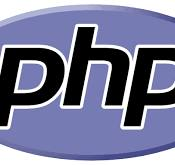
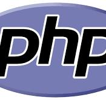

Curriculum Vitae

Description
Hi, I'm Zelda Elisa Hijry. I am a Frontend Programmer who is very interested in creating websites. I enjoy reading books in my free time.
I have approximately 2 years of experience as a Frontend Programmer and have worked on projects such as approval-based websites and logistics-based websites. I am good at learning new things about websites, such as learning new frameworks or new programming languages.
Education
- Citra Az-Zahra Elementary School (2015)
- SMPN 75 Junior High School (2018)
- SMK Telkom Jakarta Senior High School (2021)
Work Experience
- PT. Paramadaksa Teknologi Nusantara(NexSoft) as Frontend Programmer (2021-now)
Certification
- Fun Coding Bootcamp by Paideia (2021)
Skills
| 1 |
Programming Language (

 
)

)
|
Proficient in PHP, JavaScript, and Java. Experience in web application development using React JS and Laravel. Strong understanding of object-oriented programming (OOP) concepts. |
|---|---|---|
| 2 | Frontend Development | Capable of building responsive user interfaces (UI) using HTML, CSS, and JavaScript. Familiar with frontend frameworks such as Bootstrap, Ant Design (AntD), and Tailwind CSS. Knowledgeable about adaptive web design and best practices in frontend development. |
| 3 | Project Management | Skilled in managing software development projects using Agile methodologies (Scrum). Experience with project management tools like Jira and Trello. Ability to collaborate with teams and deliver projects on time. |
| 4 | Other Skill | Good understanding of software testing and debugging. Ability to optimize web application performance and perform debugging. Strong communication skills and ability to work effectively in teams. |
Links
- About me Click to see